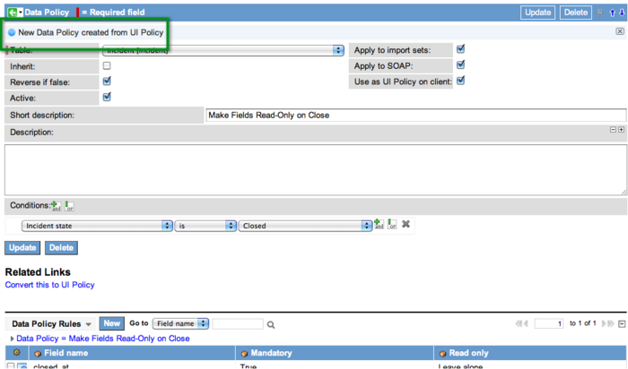

Data Policy
| |
Note: This article applies to Fuji. For more current information, see Data Policy at http://docs.servicenow.com
The ServiceNow Wiki is no longer being updated. Please refer to http://docs.servicenow.com for the latest product documentation. |
Contents
1 Overview
Data policies enable you to enforce data consistency by setting mandatory and read-only states for fields. Data policies are similar to UI policies, but UI policies only apply to data entered on a form through the standard browser. Data policies can apply rules to all data entered into the system, including data brought in through email, import sets or web services and data entered through the mobile UI.
For example, suppose that you are configuring a web service that allows users from outside the platform to update problems on the ServiceNow instance. Since these problems are not updated through the instance UI, they are not subject to the UI policies on the problem form. To ensure that the Close notes field is completed before a problem is marked Closed/Resolved, you can create a data policy that applies to server-side imports. Data that does not comply with this data policy produces an error. You can also apply the policy on the browser by selecting the Use as UI Policy on client check box in the data policy record.
Since UI policies can also manage the visibility of fields on a form, you may want to augment UI policies with data policies rather than replace them.
By default, data policies are applied to all GlideRecord operations and the REST Table API. You can opt out of applying the data policy to:
- Target records of web services
- Import sets
- Client-side UI policies
| |
Note: Defining a data policy enforces the policy when a record is submitted from the UI. This behavior cannot be changed. |
The admin role is required to edit data policies.
2 Installed with Data Policy
2.1 Tables
- Data Policy [sys_data_policy2]
- Data Policy Rule [sys_data_policy_rule]
2.2 Roles
The following role is available with data policy:
- data_policy_admin: allows you to grant access for maintaining data policy to specific users. You may have to grant this role access to the System Policy application.
2.3 Data Policy Module
The System Policy > Data Policies module displays a list of all data polices and where they apply.
{kind=link}
3 Data Policy Fields
The Data Policy form contains these fields.
| Field | Description | ||
|---|---|---|---|
| Table | Table to which this policy applies.
| ||
| Application | Application that contains this data policy (starting with the Fuji release). | ||
| Inherit | Option for whether this data policy applies to extended tables. For example, when this option is selected for a data policy on the task table, then the policy applies to the incident, problem, and change tables as well. | ||
| Reverse if false | Option for whether the true/false values of the data policy rules are reversed when the conditions evaluate to false. For example, if a data policy rule makes a field not mandatory when the conditions are true, then the field is mandatory when the conditions are false. | ||
| Active | Indicator of whether the data policy is active. To disable a data policy, clear the check box. | ||
| Short description | Brief description that identifies the policy. | ||
| Description | Detailed description of the policy. | ||
| Apply to import sets | Option to apply the policy to data brought into the system from import sets. To apply the policy to a web service import set, select this option. | ||
| Apply to SOAP | Option to apply the policy to data brought into the system from a SOAP web service. Scripted SOAP web services are not affected. This field does not affect data policy interaction with REST web services. | ||
| Use as UI Policy on client | Option to enforce the data policy on the UI (via the UI policy engine). | ||
| Related List: Data Policy Rules | |||
| Table | Read-only field displaying the table on which the data policy action applies. | ||
| Field name | Field from the selected table to which the data policy applies.
Note: The list shows only fields that are in the same scope as the data policy (starting with the Fuji release). | ||
| Read Only | Choice list to select how the data policy affects the read only state of the field. Choices are:
| ||
| Mandatory | Choice list to select how the data policy affects the mandatory state of the field. Choices are:
Note: For tables that are in a different scope than the data policy record, you cannot make a field mandatory (starting with the Fuji release). | ||
4 Creating a Data Policy
Create data policies to enforce consistency. You can create data policies only for tables and database views that are in the same scope as the data policy and for other tables that have at least one field in the same scope as the data policy (starting with the Fuji release). For tables that are in a different scope than the data policy record, you can create data policy rules only for fields in the same scope as the data policy and you cannot make a field mandatory.
To create a data policy:
- Navigate to System Policy > Rules > Data Policies. Alternatively, from any list header or form header, right-click in the header bar and select the appropriate option for your version:
- Click New.
- Select the options for the data policy.
- Create the condition that must exist for the platform to apply this policy. For example, select [Problem state] [is] [Closed/Resolved].
- Right-click the header and select Save.
- The Data Policy Rules related list appears.
- Click New in the related list and create the record that identifies the field and the policy to apply.
- Click Submit.
- [Optional] Add more rules by repeating steps 6 and 7.
{kind=link}
{kind=link}
5 Converting a UI Policy to a Data Policy
Existing UI policies can be converted to data policies. This enables you to take a policy that currently applies only to records created or updated in the browser and extend the policy to apply to import sets and data imported by SOAP web services, or to apply by default.
For a UI policy to be eligible for conversion to a data policy, the following three conditions on the UI Policy form must be met:
- The Run scripts option must not be selected
- The Global option must be selected
- None of the UI policy actions can have Visible set to True or set to False (it must be set to Leave Alone)
Note that converting a UI policy to a data policy deactivates the UI policy. To retain the policy in the UI, ensure that the Use as UI Policy on client checkbox is selected on the data policy record.
- Navigate to System UI > UI Policies and click an existing UI policy.
- Under Related Links, click Convert this to Data Policy.
- A new data policy record is created.
- 
- Edit the fields on the data policy record as necessary.
{kind=link}
6 Converting a Data Policy to a UI Policy
Converting a data policy to a UI policy is useful if a data policy already exists, but only needs to apply to records created or updated in the browser. Converting deactivates the data policy - the new UI policy is applied on the UI layer only and not to import sets or data imported from SOAP web services.
- Navigate to System Policy > Rules > Data Policies and click an existing data policy.
- Under Related Links, click Convert this to UI Policy.
- Edit the fields on the UI policy record as necessary. For details about the fields, see Creating a UI Policy.
{kind=link}
| |
Note: An alternative to converting from a data policy to a UI policy is to select the Use as UI Policy on client checkbox on the data policy record. This field extends the data policy to the UI. The main difference between converting and using the Use as UI Policy on client checkbox is that converting provides the Visible field on the UI policy record. Use the Visible field to select how the UI policy affects the visible state of the field. |
7 Debugging Data Policy
Debug messages can help you identify and resolve data policy problems. To view data policy debugging messages at the bottom of the screen, navigate to System Diagnostics > Session Debug > Debug Data Policies.
In the example, a data policy is in place to prevent the short description on an incident from being changed when the incident state is set to Open. A user edited the short description while the incident was open and tried to save the changes, but the data policy was enforced.
{kind=link}
8 Enhancements
8.1 Fuji
- These changes support developing scoped applications:
- The Table field shows only tables and database views that meet the scope protections for data policies.
- For tables that are in a different scope than the data policy record, you can create data policy rules only for fields in the same scope as the data policy and you cannot make a field mandatory.
- The Application field is added on the form view.